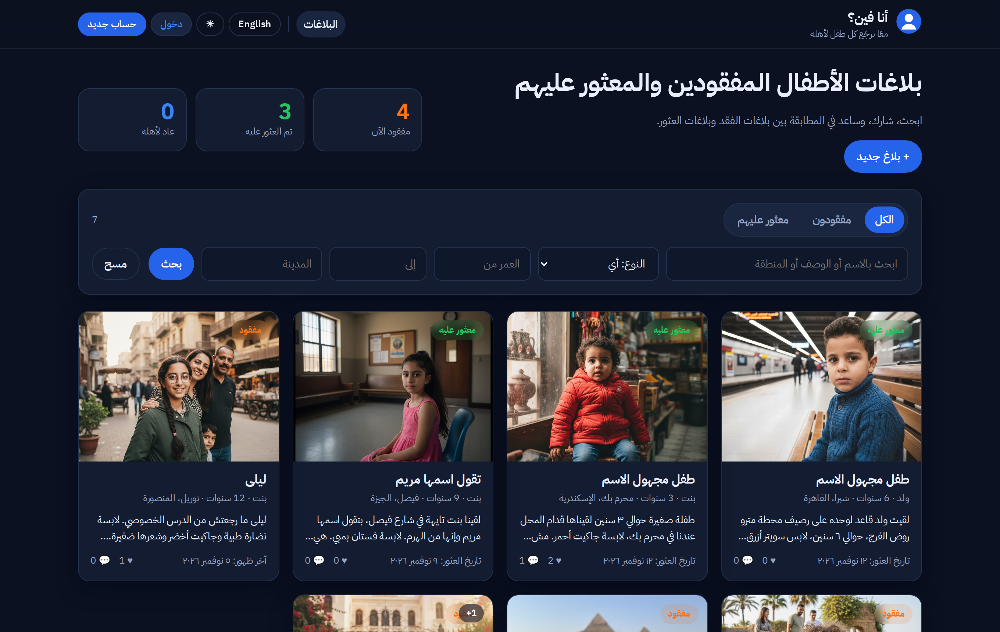
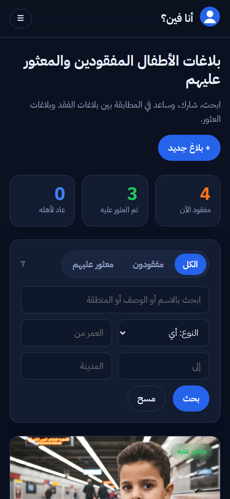
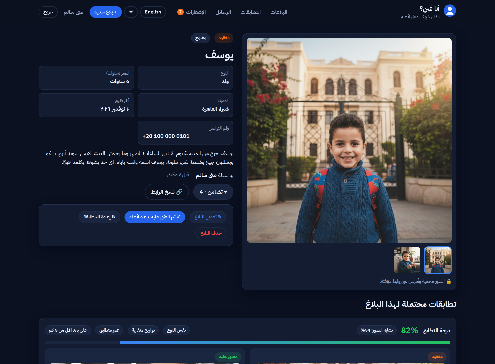
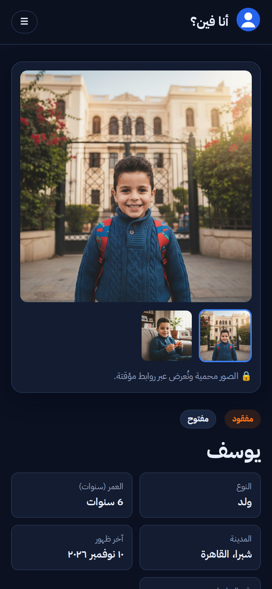

بلّغ
اختار "طفل مفقود" أو "لقيت طفل"، اكتب الوصف والمكان والتاريخ وارفع الصور من موبايلك.
انشر بلاغ بالصور في دقيقة. المنصة بتقارن بلاغات الفقد ببلاغات العثور تلقائيًا، وتنبّه الأسرة واللي لقى الطفل في نفس اللحظة.


اختار "طفل مفقود" أو "لقيت طفل"، اكتب الوصف والمكان والتاريخ وارفع الصور من موبايلك.
كل بلاغ بيتقارن بالبلاغات المفتوحة من النوع التاني: النوع، العمر مع مرور الوقت، المسافة، التاريخ، والصور.
الطرفين بيوصلهم إشعار، يقارنوا البلاغين جنب بعض، يأكدوا التطابق ويتكلموا في رسائل خاصة.
حتى 6 صور لكل بلاغ، بتترفع مباشرة من الجهاز للتخزين الآمن مع شريط تقدّم.
درجة تطابق من 100 مع أسباب واضحة: نفس النوع، عمر متطابق، على بعد أقل من 5 كم، تواريخ متقاربة.
ابحث بالاسم أو الوصف أو المنطقة، وفلتر بالنوع والعمر والمدينة وحالة البلاغ.
كلّم صاحب البلاغ مباشرة، وابعت صورة أو ملف PDF بأمان.
تطابق جديد، تعليق، تضامن أو رسالة؛ كله بيوصلك في مكان واحد.
تعليقات وتضامن ومشاركة رابط البلاغ، عشان البلاغ يوصل لأكبر عدد.
أي حد يقدر يبلّغ عن بلاغ مشكوك فيه، والمشرفين يراجعوا ويخفوا البلاغات الكاذبة.
واجهة عربية من اليمين للشمال، وإنجليزي بضغطة، ووضع داكن أو فاتح، وتشتغل على الموبايل.


المنصة مجانية للأسر والمتطوعين والجمعيات الأهلية.
شوف المنصة